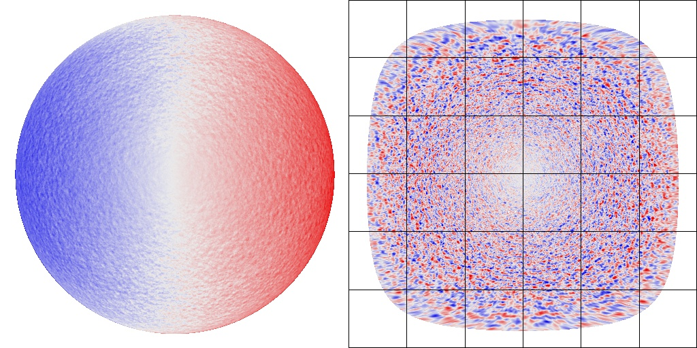
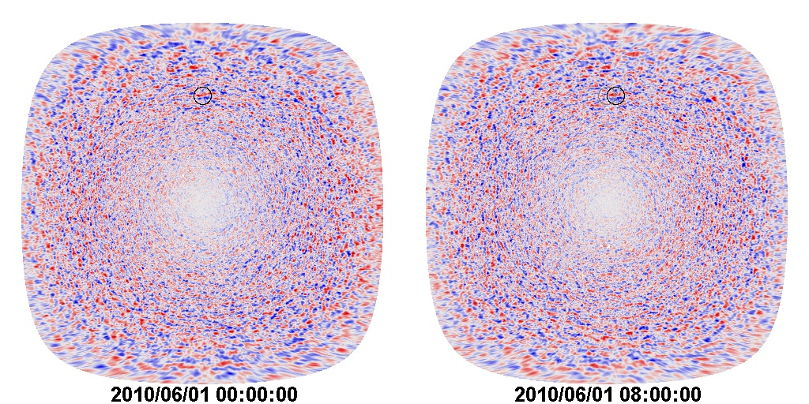
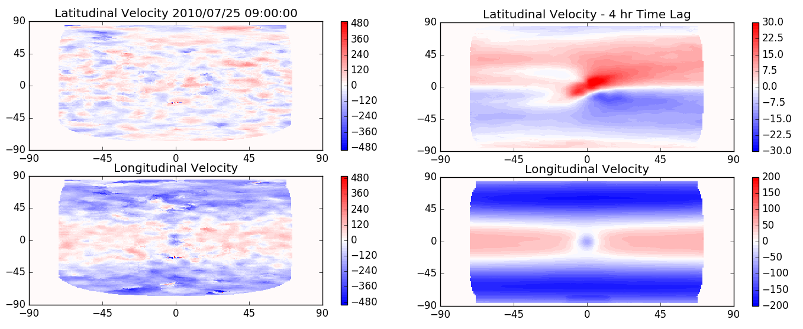
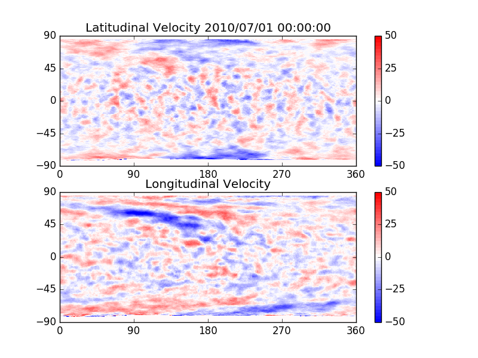
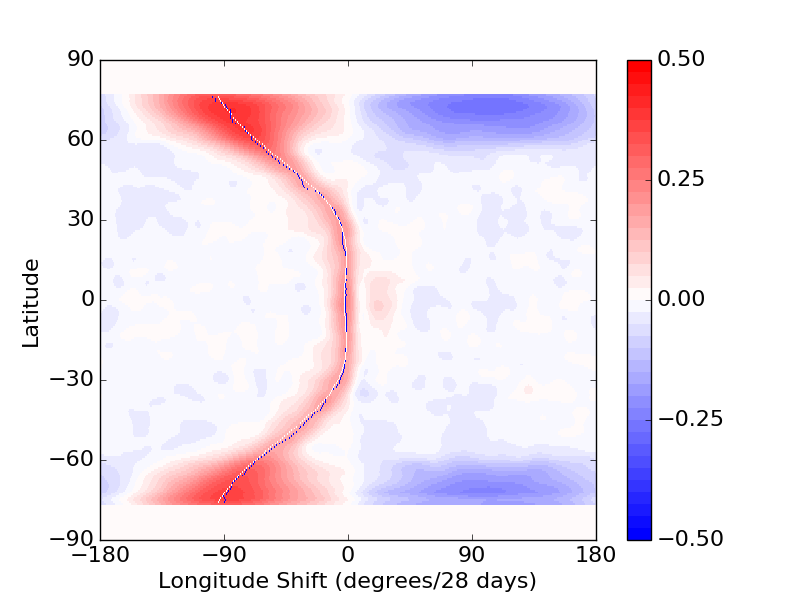
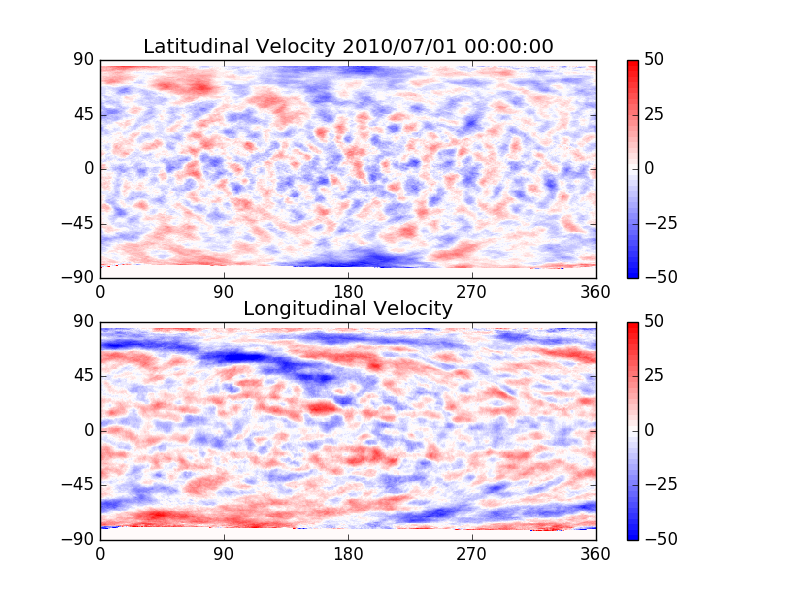
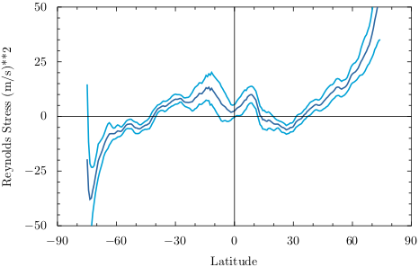
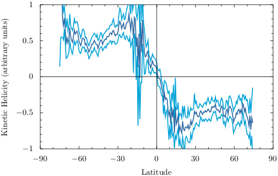
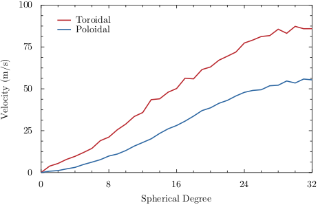
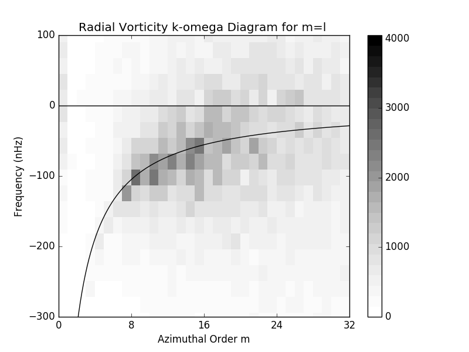

<!DOCTYPE html>
<html lang="en">
<head><meta http-equiv="Content-Type" content="text/html; charset=utf-8">
</head>
<body>
<p>&nbsp;
<p></p>
</p>
</body>
</html>
<p><br />
<title>Discover the Sun!</title>
</p>
<link href="bin" rel="shortcut icon" /><!-- Core CSS -->
<link href="css/solarcycle2.css" rel="stylesheet" /><!-- Custom CSS -->
<link href="css/solarcycle3.css" rel="stylesheet" />
<link href="css/solarcycle4.css" rel="stylesheet" /><!-- Custom Fonts --><!-- Page Content -->
<div class="container"><!-- Page Heading/Breadcrumbs -->
<h1 class="BoldBlueHeader" style="height: 39px">&nbsp; Solar Cycle Science <small>Discover the Sun!</small></h1>

<div class="row">
<div class="col-lg-12">
<ol class="breadcrumb">
	<li><a href="index.html">Home</a></li>
	<li class="active">Giant Cells Page</li>
</ol>
</div>
</div>
<!-- /.row --><!-- Content Row -->

<div class="row"><!-- Sidebar Column -->
<div class="col-md-3">
<div class="list-group"><a class="list-group-item" href="index.html">Home</a> <a class="list-group-item" href="basics.html">Basics</a> <a class="list-group-item" href="activeregions.html">Active Regions</a> <a class="list-group-item" href="flows.html">Surface Flows</a> <a class="list-group-item" href="flowprofiles.html">Axisymetric Flow Profiles</a> <a class="list-group-item" href="giantcells.html">Giant Cell Maps</a> <a class="list-group-item" href="polarfields.html">Polar Fields</a> <a class="list-group-item" href="solarcycle.html">Solar Cycles</a> <a class="list-group-item" href="aft.html">Advective Flux Transport</a> <a class="list-group-item" href="baseline.html">Baseline Maps</a> <a class="list-group-item" href="forecasts.html">Predictions</a> <a class="list-group-item" href="media.html">Media</a> <a class="list-group-item" href="people.html">People</a> <a class="list-group-item" href="more.html">More</a></div>
</div>
<!-- Content Column -->

<div class="col-md-9" style="center: 0px; top: 0px">
<h2 class="BlueHeader">Discover the Giant Cells!</h2>

<div class="Orange2_darkBG">The existence of giant cells (and first use of the name) was proposed by George Simon and Nigel Weiss in 1968.They suggested that, in addition to granules and supergranules, there should large cells that span the convection zone and have horizontal dimensions many times larger than supergranules. Over the ensueing 45 years there were several observations that hinted at the existence of giant cells but none of these studies gave any information on the detailed structure or dynamics of the cells. There were also many theoretical studies, many with detailed numerical simulations, showing what the giant cells might look like and how they might behave.<br />
<br />
In 2013 we (Hathaway, Upton, and Colegrove) published <a href="http://adsabs.harvard.edu/abs/2013Sci...342.1217H">this paper </a> in <i> Science </i>that, for the first time, showed the structure of giant cells and some measures of their dynamic properties. We found velocity structures that were large, lasted for many months, and had dynamical properties consistent with the expected effects of the Sun&#39;s rotation on these flows.<br />
<br />
We (Hathaway, Upton, and Mahajan) have recently improved both our velocity measurement method and our methods of constructing the giant cell flow maps. The method starts with a Dopplergram from SDO/HMI as shown below. The disk stationary signals are removed to reveal the supergranules and the data is then mapped onto a grid equispaced in longitude and latitude.
<div class="BGCaption">
<figure class="text-center">
<figcaption>SDO/HMI Dopplergram mapped to heliographic longitude and latitude. The 12-minute average data (left) is processed to remove the disk stationary signals (rotation, meridional flow, convective blue shift, spacecraft motion) and is then mapped onto a grid of pixels equispaced in longitude and latitude (right).</figcaption>
</figure>
</div>
<br />
We take pairs of these Dopplergram maps separated by 4, 8, and 16 hours and find the displacement of the Doppler features at an array of positions by searching for the best correlation within small elliptical windows placed at those positions. We have improved the method first used in 2013 by: 1) using correlation windows that become more elliptical at higher latitudes so that they contain the same physical area on the surface of the Sun, 2) extending the search area to allow for extremes in displacement, and 3) improving the method of determining the location of the best correlation.
<div class="BGCaption">
<figure class="text-center">
<figcaption>Cross-correlation method. Pairs of mapped Dopplergrams (8-hours apart shown here) are used to find the displacement of Doppler features in elliptical windows (circular windows shown here) by finding the best correlation with similar areas in the second image..</figcaption>
</figure>
</div>
<br />
We found that we get the best results (least noise and highest signal) using 4-hour time lags between Doppler maps. The largest velocities we find in the resulting flow maps are velocities due to the rotation/differential rotation and meridional flow of the Doppler features (supergranules). These signals are disk stationary and are removed by taking long-term (years) averages of the flow maps. Examples of the raw flow maps and the disk average flow signal are shown below.
<div class="BGCaption">
<figure class="text-center">
<figcaption>Flow maps. A raw flow map derived from the displacements over a 4-hour time interval (left) and the long-term (8-year) average of these maps showing the latitudinal and longitudinal signals that are removed from the raw flow maps.</figcaption>
</figure>
</div>
<br />
After removing the long-term average we construct preliminary maps of the giant cell flows for each day by placing each hourly map on map of the entire Sun (360 degrees of longitude) with the central meridian of the hourly placed accordingly. The flow velocity at each latitude and longitude in the preliminary giant cell map is determined by the average of all flow velocity maps obtained within +/- 13 days of the target day (thus covering a full 27-day Carrington rotation of the Sun). An example of one of these preliminary maps is shown below.
<div class="BGCaption">
<figure class="text-center">
<figcaption>A preliminary giant cell flow map. This is constructed from 27 days of hourly measurements of the flows with the long-term average removed and the average of about 300 hourly measurements taken at each point in latitude and longitude.</figcaption>
</figure>
</div>
<br />
We refer to these as preliminary giant cell flow maps because they are consructed under the assumption that the giant cell flow pattern rotates rigidly at the Carrington rotation rate (27.2753 days synodic). We can improve on these maps by determing the differential rotation rate and using that to shift the data from the hourly maps by the appropriate change in longitude at each latitude. The differential rotation of the giant cell flow pattern is determined by cross-correlating longitude strips from the preliminary maps at each latitude from maps separated by 28 days in time. The average of this cross-correlation is shown below.
<div class="BGCaption">
<figure class="text-center">
<figcaption>Cross-correlation for preliminary giant cell flow maps separated by 28 days at each latitude for shifts in longitude of +/- 180 degrees. A thin blue line passes through the peak in the correlation. A thin white line represents a polynomial fit to the differential rotation given by the blue line.</figcaption>
</figure>
</div>
<br />
<br />
This differential rotation curve is surprising. Not only is is nearly flat in the equatorial regions but the actual velocity there is slower than that found via helioseismic methods for any layers below the surface of the Sun at the equator. Clearly, something interesting is happening in the equatorial regions (more on this below). Given this differential rotation for the giant cell flow pattern, we construct final giant cell flow maps by taking each hourly flow map and displacing the data in longitude according to this differential rotation rate at each latitude for the time difference between the hourly flow map and the target date and time of the final giant cell flow map. A key difference between the preliminary giant cell flow maps and the final ones is that it requires +/- 18 days to fill in the flow maps at the highest latitudes due to the 36 day rotation period at those latitudes. An example of a final giant cell flow maps is shown below.
<div class="BGCaption">
<figure class="text-center">
<figcaption>A final giant cell flow map. This is constructed from 27 days of hourly measurements of the flows near the equator but 36 days of measurements at high latitudes.</figcaption>
</figure>
</div>

<p><br />
Our database of these flow maps is given below. The data consist of daily maps of the longitudinal and latitudinal velocities for 00:00:00 UT on grids with 512 longitudes and 256 latitudes.</p>

<p>We have made a movie of these flows (daily streamlines superimposed on maps of the radial vorticity) with views from over the Sun&#39;s equator and from over its North Pole. That 423 Mb is available <a href="bin/GiantSolarVorticies.mp4">here&nbsp;</a>.<br />
<br />
We have performed a number of analyses of these data. An easy, but important analysis is to find the Reynolds Stress or momentum flux associated with these flows. This is done by taking, at each point, the product of the longitudinal velocity and the co-latitudinal velocity (positive towards the south) and averaging that product over longitude and time. The results of an 8-year average are shown below with error limits. At high latitudes (above about +/- 40 degrees) there is an equatorward flux of angular momentum. At low latitudes this equatorward flux disappears or even reverses.</p>

<div class="BGCaption">
<figure class="text-center">
<figcaption>The Reynolds Stress or momentum flux associated with the giant cell flows (dark blue line) with 2-sigma error range (light blue lines). The product of the longitudinal velocity (angular momentum) and the co-latitudinal velocity averaged over longitude and time indicates and equatorward flux of angular momentum at high latitudes. This is not seen in the equatorial regions.</figcaption>
</figure>
</div>
<br />
Another analysis is designed to find the kinetic helicity - the dot product of the velocity and the vorticity in the flow. We calculate a proxy for the radial component of the kinetic helicity by taking the product of the radial vorticity (the curl of the horizontal velocities) and the horizontal divergence (a proxy for the radial velocity). The average of this product over longitude and time is shown below. We that the kinetic helicity is negative (left-handed) in the northern hemisphere and positive (right-handed) in the southern hemisphere. Here again we see somewhat different behavior in the high vs. low latitudes.
<div class="BGCaption">
<figure class="text-center">
<figcaption>The kinetic helicity associated with the giant cell flows (dark blue line) with 2-sigma error range (light blue lines). The kinetic helicity is negative (left-handed) in the northern hemisphere and positive (right-handed) in the southern hemisphere. This is the expected result of the effects of the Sun&#39;s rotation on these large, slow flows.</figcaption>
</figure>
</div>
<br />
Another analysis involves finding the spectrum of the flows. In particular finding the spherical harmonic spectra of the velocity curl (representing the toroidal flow component) and the velocity divergence (representing the poloidal flow component). Toroidal flows consist of vorticies while poloidal flows consist of diverging and converging flows. This spectral analysis is shown below. We find that the toroidal component dominates - the giant cell flows largely consist of vorticies due to the effects of the Sun&#39;s rotation.
<div class="BGCaption">
<figure class="text-center">
<figcaption>The spherical harmonic velocity spectra (characteristic velocity as a function of wavenumber) for the toroidal (red) and poloidal (blue) velocity components. The giant cell flows are dominated by the toroidal component with flow vortices.</figcaption>
</figure>
</div>
<br />
<br />
A final analysis is to extend this spectral analysis to include a spectral analysis in time by taking the Fourier transform in time of the spherical harmonic spectral coefficients. This gives a three dimensional array of spectral amplitudes. If we only look at the sectoral modes - modes with spherical harmonic order m equal to the degree l - we find a ridge of power representative of Rossby waves with temporal frequence proportional to 1/(1 + m). This is shown below. Note that these sectoral modes are confined to the equatorial regions where we see different behavior from that at high latitudes. This Rossby wave behavior was reported recently by <a href="http://adsabs.harvard.edu/abs/2018NatAs...2..568L">Loptien et al. </a> in <i> Nature </i>.

<div class="BGCaption">
<figure class="text-center">
<figcaption>The k-omega diagram for the giant cell vorticity. The line drawn through the diagram represents Rossby waves with frequence = 900/(m+1) nHz.</figcaption>
</figure>
</div>
<br />
<br />
&nbsp;</div>
</div>

<div class="col-md-12" style="left: 0px; top: 0px">
<h2 class="BlueHeader">Discover the Giant Cell Database!</h2>

<div class="Orange2_darkBG">Each zipped file in this database contains a set of daily FITS files and associated png image files containing the longitudinal and latitudinal flow velocity maps for each day of each month. These maps represent the flows as of 00:00:00 UT on the given date. The maps are on grids equispaced in longitude (512 points) and in latitude (256 points). Longitudinal velocities are in m/s with positive values indicating flows in the direction of increasing longitude. Latitudinal velocities are also in m/s with positive values indicating flows in the direction of increasing latitude (northward). The FITS files have two (512 by 256 pixel) arrays with the first array being the longitudinal velocity. A Python script illustrating how to read the arrays and produce the png files is available <a href="GC_Database/GiantCellFlowPlots.py">here </a>.

<div class="text-center"><br />
<b><span class="auto-style6">2010 </span> </b><br />
&emsp;<a href="GC_Database/2010_06.zip">Jun </a> &emsp;<a href="GC_Database/2010_07.zip">Jul </a> &emsp;<a href="GC_Database/2010_08.zip">Aug </a> &emsp;<a href="GC_Database/2010_09.zip">Sep </a> &emsp;<a href="GC_Database/2010_10.zip">Oct </a> &emsp;<a href="GC_Database/2010_11.zip">Nov </a> &emsp;<a href="GC_Database/2010_12.zip">Dec </a><br />
<b><span class="auto-style6">2011 </span> </b><br />
&emsp;<a href="GC_Database/2011_01.zip">Jan </a> &emsp;<a href="GC_Database/2011_02.zip">Feb </a> &emsp;<a href="GC_Database/2011_03.zip">Mar </a> &emsp;<a href="GC_Database/2011_04.zip">Apr </a> &emsp;<a href="GC_Database/2011_05.zip">May </a> &emsp;<a href="GC_Database/2011_06.zip">Jun </a> &emsp;<a href="GC_Database/2011_07.zip">Jul </a> &emsp;<a href="GC_Database/2011_08.zip">Aug </a> &emsp;<a href="GC_Database/2011_09.zip">Sep </a> &emsp;<a href="GC_Database/2011_10.zip">Oct </a> &emsp;<a href="GC_Database/2011_11.zip">Nov </a> &emsp;<a href="GC_Database/2011_12.zip">Dec </a><br />
<b><span class="auto-style6">2012 </span> </b><br />
&emsp;<a href="GC_Database/2012_01.zip">Jan </a> &emsp;<a href="GC_Database/2012_02.zip">Feb </a> &emsp;<a href="GC_Database/2012_03.zip">Mar </a> &emsp;<a href="GC_Database/2012_04.zip">Apr </a> &emsp;<a href="GC_Database/2012_05.zip">May </a> &emsp;<a href="GC_Database/2012_06.zip">Jun </a> &emsp;<a href="GC_Database/2012_07.zip">Jul </a> &emsp;<a href="GC_Database/2012_08.zip">Aug </a> &emsp;<a href="GC_Database/2012_09.zip">Sep </a> &emsp;<a href="GC_Database/2012_10.zip">Oct </a> &emsp;<a href="GC_Database/2012_11.zip">Nov </a> &emsp;<a href="GC_Database/2012_12.zip">Dec </a><br />
<b><span class="auto-style6">2013 </span> </b><br />
&emsp;<a href="GC_Database/2013_01.zip">Jan </a> &emsp;<a href="GC_Database/2013_02.zip">Feb </a> &emsp;<a href="GC_Database/2013_03.zip">Mar </a> &emsp;<a href="GC_Database/2013_04.zip">Apr </a> &emsp;<a href="GC_Database/2013_05.zip">May </a> &emsp;<a href="GC_Database/2013_06.zip">Jun </a> &emsp;<a href="GC_Database/2013_07.zip">Jul </a> &emsp;<a href="GC_Database/2013_08.zip">Aug </a> &emsp;<a href="GC_Database/2013_09.zip">Sep </a> &emsp;<a href="GC_Database/2013_10.zip">Oct </a> &emsp;<a href="GC_Database/2013_11.zip">Nov </a> &emsp;<a href="GC_Database/2013_12.zip">Dec </a><br />
<b><span class="auto-style6">2014 </span> </b><br />
&emsp;<a href="GC_Database/2014_01.zip">Jan </a> &emsp;<a href="GC_Database/2014_02.zip">Feb </a> &emsp;<a href="GC_Database/2014_03.zip">Mar </a> &emsp;<a href="GC_Database/2014_04.zip">Apr </a> &emsp;<a href="GC_Database/2014_05.zip">May </a> &emsp;<a href="GC_Database/2014_06.zip">Jun </a> &emsp;<a href="GC_Database/2014_07.zip">Jul </a> &emsp;<a href="GC_Database/2014_08.zip">Aug </a> &emsp;<a href="GC_Database/2014_09.zip">Sep </a> &emsp;<a href="GC_Database/2014_10.zip">Oct </a> &emsp;<a href="GC_Database/2014_11.zip">Nov </a> &emsp;<a href="GC_Database/2014_12.zip">Dec </a><br />
<b><span class="auto-style6">2015 </span> </b><br />
&emsp;<a href="GC_Database/2015_01.zip">Jan </a> &emsp;<a href="GC_Database/2015_02.zip">Feb </a> &emsp;<a href="GC_Database/2015_03.zip">Mar </a> &emsp;<a href="GC_Database/2015_04.zip">Apr </a> &emsp;<a href="GC_Database/2015_05.zip">May </a> &emsp;<a href="GC_Database/2015_06.zip">Jun </a> &emsp;<a href="GC_Database/2015_07.zip">Jul </a> &emsp;<a href="GC_Database/2015_08.zip">Aug </a> &emsp;<a href="GC_Database/2015_09.zip">Sep </a> &emsp;<a href="GC_Database/2015_10.zip">Oct </a> &emsp;<a href="GC_Database/2015_11.zip">Nov </a> &emsp;<a href="GC_Database/2015_12.zip">Dec </a><br />
<b><span class="auto-style6">2016 </span> </b><br />
&emsp;<a href="GC_Database/2016_01.zip">Jan </a> &emsp;<a href="GC_Database/2016_02.zip">Feb </a> &emsp;<a href="GC_Database/2016_03.zip">Mar </a> &emsp;<a href="GC_Database/2016_04.zip">Apr </a> &emsp;<a href="GC_Database/2016_05.zip">May </a> &emsp;<a href="GC_Database/2016_06.zip">Jun </a> &emsp;<a href="GC_Database/2016_07.zip">Jul </a> &emsp;<a href="GC_Database/2016_08.zip">Aug </a> &emsp;<a href="GC_Database/2016_09.zip">Sep </a> &emsp;<a href="GC_Database/2016_10.zip">Oct </a> &emsp;<a href="GC_Database/2016_11.zip">Nov </a> &emsp;<a href="GC_Database/2016_12.zip">Dec </a><br />
<b><span class="auto-style6">2017 </span> </b><br />
&emsp;<a href="GC_Database/2017_01.zip">Jan </a> &emsp;<a href="GC_Database/2017_02.zip">Feb </a> &emsp;<a href="GC_Database/2017_03.zip">Mar </a> &emsp;<a href="GC_Database/2017_04.zip">Apr </a> &emsp;<a href="GC_Database/2017_05.zip">May </a> &emsp;<a href="GC_Database/2017_06.zip">Jun </a> &emsp;<a href="GC_Database/2017_07.zip">Jul </a> &emsp;<a href="GC_Database/2017_08.zip">Aug </a> &emsp;<a href="GC_Database/2017_09.zip">Sep </a> &emsp;<a href="GC_Database/2017_10.zip">Oct </a> &emsp;<a href="GC_Database/2017_11.zip">Nov </a> &emsp;<a href="GC_Database/2017_12.zip">Dec </a><br />
<b><span class="auto-style6">2018 </span> </b><br />
&emsp;<a href="GC_Database/2018_01.zip">Jan </a> &emsp;<a href="GC_Database/2018_02.zip">Feb </a> &emsp;<a href="GC_Database/2018_03.zip">Mar </a> &emsp;<a href="GC_Database/2018_04.zip">Apr </a> &emsp;<a href="GC_Database/2018_05.zip">May </a> &emsp;<a href="GC_Database/2018_06.zip">Jun </a> &emsp;<a href="GC_Database/2018_07.zip">Jul </a>&nbsp; &nbsp;&nbsp;<a href="GC_Database/2018_08.zip">Aug </a> &emsp;<a href="GC_Database/2018_09.zip">Sep </a> &emsp;<a href="GC_Database/2018_10.zip">Oct </a> &emsp;<a href="GC_Database/2018_11.zip">Nov </a> &emsp;<a href="GC_Database/2018_12.zip">Dec </a></div>

<div class="text-center"><b><span class="auto-style6">2019&nbsp;</span></b><br />
&emsp;<a href="GC_Database/2019_01.zip">Jan </a> &emsp;<a href="GC_Database/2019_02.zip">Feb </a> &emsp;<a href="GC_Database/2019_03.zip">Mar </a> &emsp;<a href="GC_Database/2019_04.zip">Apr </a> &emsp;<a href="GC_Database/2019_05.zip">May </a> &emsp;<a href="GC_Database/2019_06.zip">Jun </a> &emsp;<a href="GC_Database/2019_07.zip">Jul </a>&nbsp; &nbsp;&nbsp;<a href="GC_Database/2019_08.zip">Aug </a> &emsp;<a href="GC_Database/2019_09.zip">Sep </a> &emsp;<a href="GC_Database/2019_10.zip">Oct </a> &emsp;<a href="GC_Database/2019_11.zip">Nov </a> &emsp;<a href="GC_Database/2019_12.zip">Dec </a></div>

<div class="text-center"><b><span class="auto-style6">2020&nbsp;</span></b><br />
&emsp;<a href="GC_Database/2020_01.zip">Jan </a> &emsp;<a href="GC_Database/2020_02.zip">Feb </a></div>
</div>
</div>
</div>
<!-- /.row -->

<hr /><!-- Footer -->
<footer>
<div class="row">
<div class="col-lg-12">
<p class="Copyright">Copyright &copy; SolarCycleScience.com 2017</p>
</div>
</div>
</footer>
</div>
<!-- /.container -->